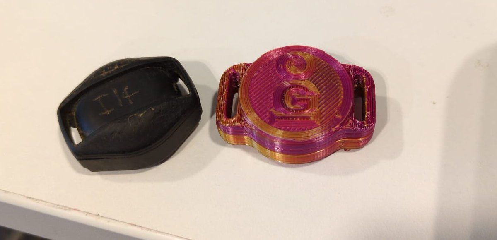
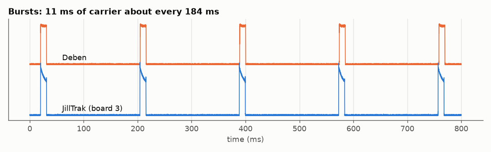
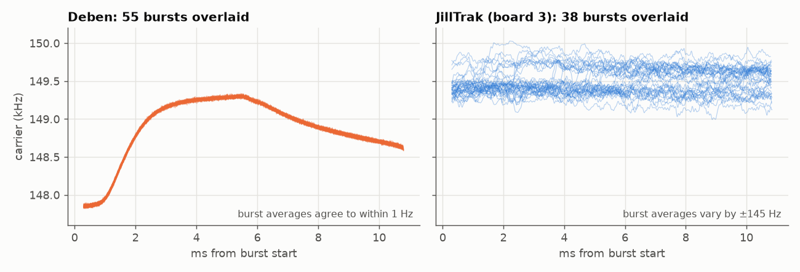
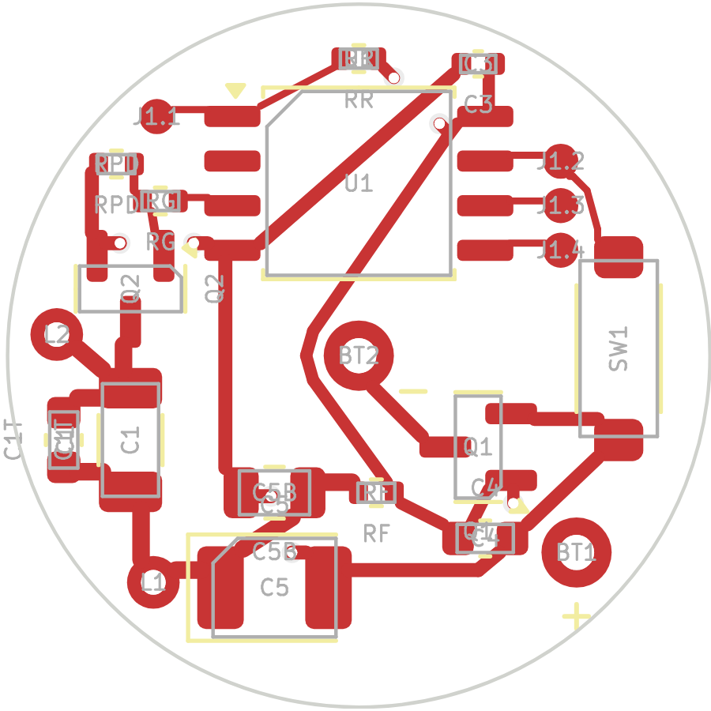
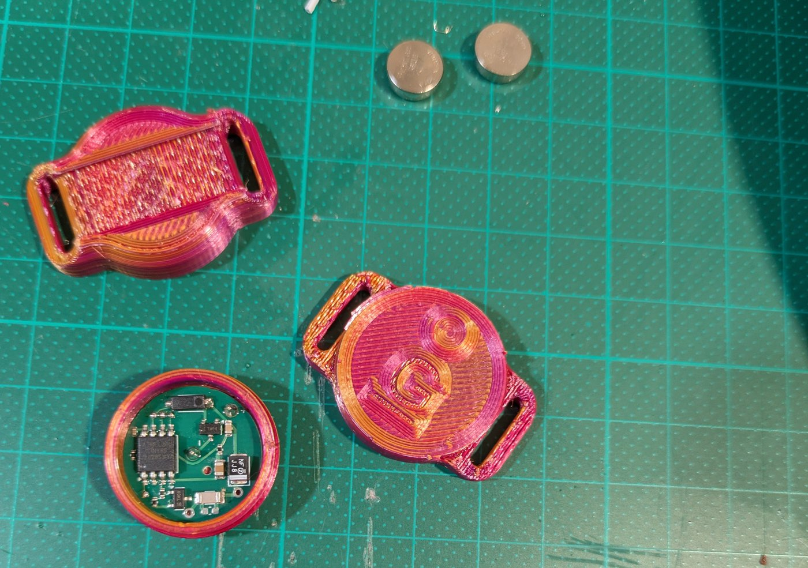
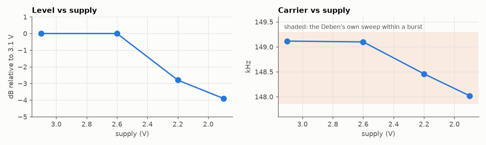

Open-source ferret finder collar
JillTrak
A replacement collar transmitter for Deben ferret finders. It works with the Deben receivers people already have, and everything you need to make one is free to use.

Why we made it
Lots of ferreters use Deben finders. The collar goes on the ferret, and the handheld receiver tells you where it is underground and how deep. Deben has closed down and you can't buy new collars any more, so if you lose one down a hole, that's it.
So we measured a working Deben collar, built our own to match it, and put the design online for anyone to use.
What the Deben sends
We recorded a Deben collar with a software-defined radio. It sends short bursts of a 149 kHz signal, about five times a second.

At this frequency the receiver picks up the coil's magnetic field rather than radio waves, a bit like a metal detector. Soil and rock hardly affect it. The field gets weaker with the cube of the distance, which is how the receiver works out depth.
The Deben's frequency isn't fixed. During each burst it climbs from about 147.9 to 149.3 kHz and drifts back to 148.7 kHz, exactly the same way every time. That points to a simple analog circuit, probably built around 555 timers. It also means the receiver accepts a range of frequencies, so ours doesn't have to match the Deben's exactly.

There's more detail in the background section.
How ours compares
| Deben | JillTrak | |
|---|---|---|
| Frequency | about 149.1 kHz, sweeps within each burst | about 149.1 kHz, set for each board |
| Bursts | 11.1 ms, every 184 ms or so | the same |
| Signal strength | within about 1 dB of the Deben | |
| Strength during a burst | stays level | fades slightly (we're working on this) |
| Coil | on a ferrite tube | 19 turns on a 23 mm printed former |
| On and off | magnet | magnet, one swipe on, one swipe off |
| Case | two threaded halves, strap through both | the same idea, 3D printed, with an O-ring seal |


Where it's at
Our transmitter matches the Deben's frequency, timing and signal strength. The circuit board works and is ready to order, and the 3D-printed case works, though we're still fixing a few fit problems.
We're working on two things in the firmware. The first is keeping the signal at the same strength all the way through each burst, like the Deben does. The second is a new version that runs on a single CR1632 cell, which would make the case much simpler to build. On a bench supply it keeps transmitting down to 1.9 V.
We still need to do proper range and depth tests with a Deben receiver.

Make your own
- Order the circuit board from JLCPCB. The files are in hardware/pcb.
- Program it with an Arduino Uno. See Firmware.
- Print the case, wind the coil and put it together. See hardware/enclosure.
You'll need to be comfortable soldering tiny parts and fine wire, and you'll need an SDR or a Deben receiver to check each board's frequency.
Want one made for you?
Email natalia at galinengine dot com. They cost about US$200.
If you'd like to support the project, you can donate here.